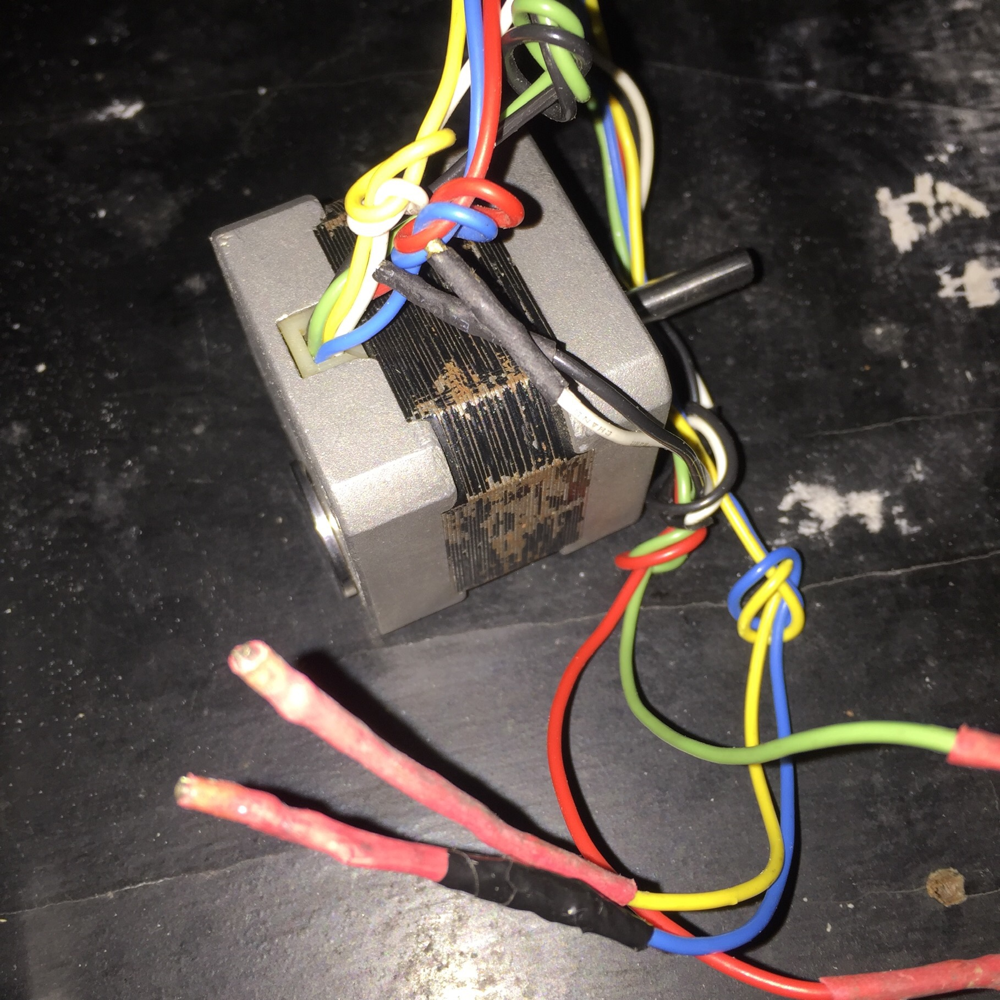
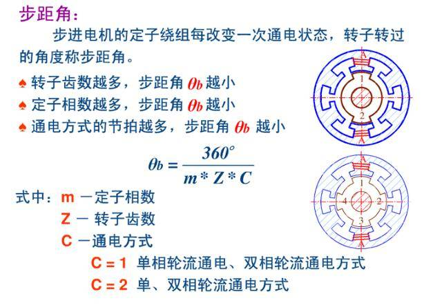

步进电机

步进电机的模样是这样的，这个42步进电机是从大学里带来的;)
步进电机的特点跟它的名称一样，是按"步"行进的。常见的两相步进电机一步转动角度为1.8°。配上不同的驱动后，在此基础上还可以进一步细分1/2 1/4 1/8... 这样一来，它转一圈需要200/400/800或者更大倍数的步数。
关于步进电机，网上找到一篇很好的文章，参见 步进电机基本介绍
定子通电后建立起磁场吸引转子，转子一般为永磁体，图中用磁针来简化。如果定子按一定规律顺序通电，形成旋转的磁场，那么磁针即转子也会跟着旋转。
图中是简化后的形象，更容易理解。实际中转子的磁极很多，如100个。图中定子是单极性接法，如果是双极性接法会得到更大扭矩。

步进电机内部结构，如果定子是按相对面放置，那么共5对，这就是五相步进电机。转子边缘的突起就是各个磁极了。

这组公式是前面文章中的，步进角的计算公式。
驱动
在大学的时候，实验室的同伴用LM298手工焊驱动步进电机，用单片机按照相序来控制，难度较大。其实LM297和LM298一起使用会更好。
还有另一种选择就是使用成品驱动器，只需要给脉冲时钟信号，还有正反转方向信号即可，并且能够细分。对其不熟悉都能使用，说的就是当时的自己，实践证明该补的课还是得补。最近发现这种驱动盒就有使用TB6560/TB6600做的。
步进电机驱动芯片A4988和DRV8825是近期才了解的，A4988提供2A电流的驱动能力，上至1/16细分。DRV8825能提供2.5A，上至1/32的细分。它们的封装都是表面贴的，在万能板上焊接不太可行。
日前，网上淘宝、天猫A4988 DRV8825模块价格大都处在5-15元，而芯片价格与模块价格几乎一样。想想这相当于一个生鸡蛋和一个茶叶蛋都一个价了。想想，最后还是决定自己动手用TB6560做一个。
有不少场合对空间、体积的要求并不苛刻，用些大个头是没有问题的。表面贴封装的器件更容易做小，并在批量生产上有很大的优势。直插封装的器件一般容限更大，容易手工操作，更适合做样件。
TB6560的技术手册附上TB6560.pdf，感兴趣的同学看看，一起学习。